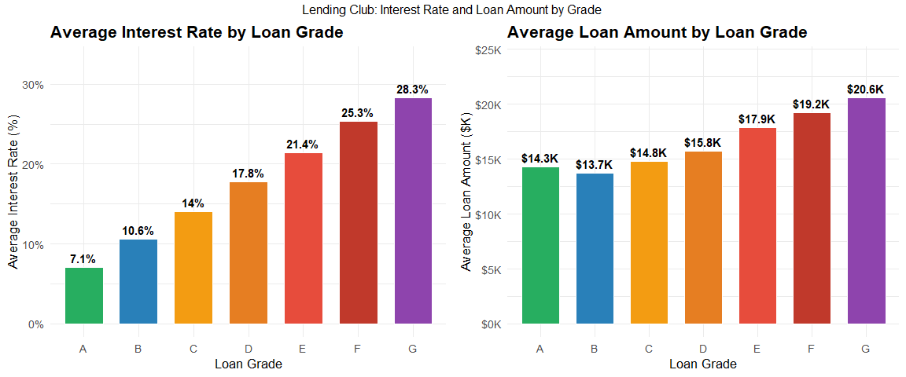

Data analysis · Individual NEC coursework
Six years of lending patterns
Six annual files joined into a repeatable financial analysis.
A descriptive R analysis combining 2012–2017 loan files with geographic lookups to explore loan grades, rates, borrower characteristics and regional patterns.
Approach
- Stacked six annual loan files with explicit column definitions and consistent types.
- Joined state and regional lookup tables for geographic summaries.
- Compared loan grades and interest rates, income and loan amounts, and employment patterns.
- Created state-level choropleth maps and regional views using grouped R summaries.


What I learned
Geographic comparisons need the measure and sample context attached. Average loan size describes the supplied loans; it does not establish a state’s credit quality or explain why the pattern exists.
Limits
This is descriptive, observational coursework. The figures are existing rendered outputs, and the underlying computation was not rerun for the portfolio. The public package excludes borrower-level records. No causal effect, future credit performance, predictive accuracy or financial impact is claimed.
Next step
Add sample-size and coverage checks to each geographic comparison, then examine whether the patterns remain after accounting for loan year and borrower mix.